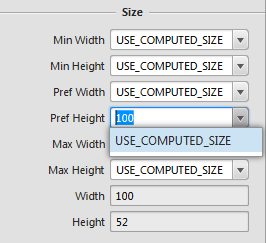

Scene Builder
Scene Builder is an awesome and easy way to build user interfaces and their fxml files. As a result we are going to use Scene Builder to build our To-Do list application's UI. We will go over where to get Scene Builder, some of the basics of scene builder, and then the actual building of our UI for the application. Don't be afraid to reference the JavaFX API for further clarification on topics.
Create a new project called TooToDo and under the src folder create a new folder called "TooToDoApp." Within this folder, create another folder called "View." Place the fxml files that we will create in this folder.
Downloading Scene Builder
To download Scene Builder click here. Once this is done go through the installation process.
Basics of Scene Builder
Open Scene Builder and hopefully you see something similar to below. In this section we will discuss the main subwindows of Scene Builder.

Library
The library contains the items that JavaFX uses to create and organize user interfaces. These items are separated into small groups such containers, controls, and so on. Containers are used generally for controlling the layout. The controls section contains items that help facilitate output and user input like buttons and text areas.
Workspace
This is your canvas. This is the window where you will drag items from the library. Since the containers can hold other containers, this is also the area where you can change the layout.
Hierarchy
Using the workspace when trying to organize empty containers can make it difficult to select the specific container you would like to move. Scene Builder's response to this problem is the hierarchy. This contains a tree of the placed items within the workspace and gives us an alternative way to select items and also allows a nice visual of the organized items.
Inspector
The inspector is active when an item from the library is selected. Once an item is selected three tabs will show: properties, layout, and code. Properties is just a generic properties section that most items have. The layout tab shows layout related properties such as height, width, spacing, and padding. And last but not least, the code section holds event handlers which will prove useful later on in this tutorial.
Building the User Interface
The Login Page
Let's take a look at what we will create.
Now, let us look at what makes this layout.
Now...let's build it. We need to decide on a main layout structure for the login page of our application. We will use an AnchorPane. Anchorpanes allow for the positioning of child nodes within the pane with respect to the edges. This also seems to be the default layout when creating new fxml files with Scene Builder.
1. If the anchorpane is not the current container in the workspace go to File>New With Root Container>Anchor Pane and call this new file "Login.fxml".
2. Change the pref width and pref height in the inspector property sto 800 and 600 respectively. The pref width and pref height determine the default size of the window when the application is opened.
3. Under the container section in the library find the VBox. Items placed within a VBox will stack vertically. The HBox does the same, just horizontally. Drag a VBox to the anchor pane slowly, you will see red lines show up around the edges and the centers of the sides. When an item is placed on a vertical red line the layout property layout x is set to that red line. When an item is placed with a horizontal line, the layout y property is set. For this VBox we would like to place it in the center of the anchor pane, two perpendicular red lines will show up when you're close as shown below.

4. Change the spacing property under the layout tab in the inspector to 10. This will space the items placed within this container to have a spacing of 10 between them. Which will help make things look less crammed.
5.Now, change the constraints of the VBox to the anchor pane to be centered and allow room for the containers we will add. To do this, change the constraints under the layout properties in the inspector as shown.

6. Change the pref width and pref height of the VBox to USE_COMPUTED_SIZE, this will make the VBox fit snug around the items within it.
7. Next, change the node property alignment in the inspector subwindow to CENTER. This will make all nodes within the vbox become centered with respect to the vbox's borders.
8. We need a title for the login page, under the controls section in the library find a label. Labels provide an easy way to display text. Drag this item into the VBox and drop it.
9. Select the label and look under the inspector and in the properties section change the text value to "Too To Do Login." This is the value that the label will display.Pay attention to the hierarchy. Note how the tree evolves as we add in extra items, specifically pay attention to the indentation of each item placed. This will help us when we add our next few items.
10. We will now add 3 HBoxs under the label that we just placed. If the VBox becomes crowded and makes placing an HBox difficult try dragging the hbox to the hierarchy section and drag it over the VBox, some yellow lines should show and give a preview of where the hbox will be placed within the tree.
11. Change the pref width and pref height of these boxes to USE_COMPUTED_SIZE.
12. Set the alignment properties of all the HBoxs to CENTER.
13. Next place another label underneath all the items in the vbox. This label will show a text when a user login fails. Erase its current text value so the label does not show.
14. In order to access this label to display it we will need a way to reference it from our program. Go to the code section in the inspector and change the fx:id value to "loginFailed". This is how we will reference this item in code.
15. Now we need a place for the user to enter an account name and a password. In the top 2 hboxs, place a label and a TextField both of which are found in the controls section. Text fields are used to receive typed user input. After placing these items your hierarchy should look like the image below.

16.Change the top hbox label text value to "Username:" and the middle hbox label text value to "Password:".
17. Change the prompt text, under the properties tab in the inspector to "Username" and "Password" for the top and bottom text fields respectively. The prompt text will show when the text field is empty and help users understand what to type. If the field is selected, the prompt text does not show. Just like the login fail label, we need a way to reference these text fields in order to get the text within them.
18.Give the login text field the fx:id "loginTextField" and the password text field the fx:id "passwordField".
19.The next components we need are buttons in order to prompt actions by the program. Find buttons in the controls section and place 2 in the 3rd hbox. Your hierarchy should resemble the form show below.
20. Your buttons may be very close together, in order to space them out go to the spacing property of their hbox container and set the value to 40.
21. Next, change the text properties of the buttons to show "Login" and "Register".
22. Now we need to know what functions to call when the buttons are pressed. For these 2 buttons we will have 2 different functions that are called when each one is pressed handleLoginButton() and handleRegisterButton(). In order for these buttons to know what function to call, we will go into the code section of the inspector for each button and change the On Action field to handleLoginButton and handleRegisterButton depending on the button. When these buttons are clicked the corresponding On Action functions will be called.
23. Lastly, give the login button and register button fx:ids loginButton and registerButton.
The login page is now complete! Next we will build the registration page.
The Registration Page
Good news! This is essentially the login page with a few properties changed and the addition of an hbox. You may either build it from the ground up or create a copy of Login.fxml and update it. For the sake of brevity and the repetitious nature of the page, we will go with the latter. BUT! If you would like a nice challenge try to replicate the page based on the picture below and see how you do! The starting pane was an anchor pane.
1. Save the copied Login file as Registration.fxml.
2. Insert an HBox in between the Password hbox and the hbox containing the 2 buttons. The black arrow points at 2 parallel lines. If the mouse is placed over the top line the hbox will be placed in the hbox above the line. If the mouse is over the bottom line it will place it in the VBox, a perpendicular yellow line will show you where the hbox will be placed.
3. Change the HBox pref width and pref height to USE_COMPUTED_SIZE.
4. Insert a label with the text "Retype Password:" into the newly created hbox.
5. Next to that, place a text field and change the fx:id under the code properties to "retypePasswordField".
6. Change the prompt text to "Password".
7. Now let us change the existing items to better fit our needs. Change the label that holds the page title's text to "Too To Do Registration".
8. Change the left button's text to "Register" and set the code property On Action to "handleRegisterButton" also give this button the fx:id "registerButton".
9. Next, change the right button's text to "Cancel" and set the code property On Action to "handleCancelButton", give this button the fx:id "cancelButton".
Congratulations! Only two more screens to go. Now let's build the meat of the application UI.
The To Do List
What we will be building:
In this section we will get to use a border pane. Border panes divide an area into 5 sections, the four sides and the center. As we can see, our to do list will show a task's name and description as well as whether it is done or not. Then once a task is complete a user will be able to either select the task and complete it or delete the task.
1. Create a new fxml file with a border pane as the root container. (File>New With Root Container>Border Pane)
2. Set the pref width and pref height to 800 and 600, respectively.
3. Add a label to the top of the border pane. Change the text value to "To Do List:".
4. How does that label look? You probably would prefer it to be centered. If this is the case, click on the label and change the alignment to CENTER or whatever your preference may be.
5. In the library find a TableView and drag it to the center of the border pane. Change the margin values to the values below. The margin values determine the spacing of the items within the section from the borders of the other sections. When we add to the bottom section of the border pane in a few steps note how the middle section moves over to accommodate it.
6. A tableview displays information in table columns. Find the table columns in the library and them to the table view until there are 3 columns. These will display the task's properties discussed earlier.
7. Change the table columns text property from left to right to "done yet?", "Task", and "Task Notes."
8. Next, we would like to stretch the columns in order to fill the table space, we have two ways to do this. One way is to use your mouse to drag the columns borders in order to make them bigger. Another way is to change the pref widths value to 75, 150, and 500 from right to left. By now, your page should resemble the image below.
9. In order for the program to know where to send task information, the table columns must be identified in some way. You may have guess for this purpose we change the code property fx:id. For the column to the far left, change the fx:id to doneColumn. The middle column's fx:id should be taskColumn, and lastly the far right's fx:id should be taskNotesColumn.
10. Add an hbox to hold buttons on the bottom section of the border pane.
11. Set the hbox's spacing to 20 and the alignment to CENTER.
12. Now, we need a way to receive user input. We will add 4 buttons: Create Task, Complete Task, Delete Task, and Logout with those names as their text property. Your hierarchy tree should resemble the one below.
13. As with all buttons, we need to add functions that will be called when these buttons are pressed. From left to right, change the code property On Action to "handleCreateTask", "handleCompleteTask", "handleDeleteTask", and "handleLogout".
Congratulations! You completed this page, finally we will create the page for creating tasks that will be listed in our table view.
Create Task Page
This is a simple page that users will interact with to create tasks. The page will look like the following:
1. Create the root frame as an anchor pane.
2. Add a vbox to the center of the anchor pane and set the alignment of the vbox to CENTER.
3. Change the constraints of the vbox to the values below.

4. Add a label, followed by a text field, followed by another label and text field.
5. Set the top label and the second label to "Task Name:" and "Task Notes:" respectively.
6. One last time we will need a way to refer to the information contained within the text fields. On the top text field change the code property fx:id to "taskNameField" and the bottom text field fx:id to "taskNotesField".
7. Add an hbox to the center vbox to hold the buttons. Set the spacing to 20.
8. Next, add two buttons with their text property as "Create Task" and "Cancel".
9. Finally add the On Action values "handleCreateTask" and "handleCancel".
Congratulations! You have completed the Scene Builder tutorial. Once you have made it through the tutorial you should play around with scene builder to get more comfortable with it. Next we will go into the Model classes of the application.
A Note on Controller Classes
The fxml files will need to know who their controller classes are in order to determine button functionality (which is why the buttons On Action methods can have the same name). Once your controller files are created you will need to direct the fxml to the controller file. This is done by clicking on the root pane and providing a path to the controller class in the code properties. It will resemble something below.
Since each page has buttons, there is a different controller class for each page. So you will need to go through and update this as you create the controller classes. Good luck!